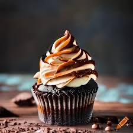
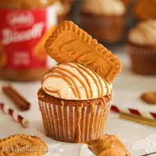
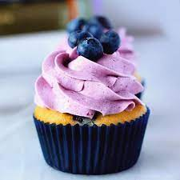

Chocolate Cupcake
A chocolate cupcake is a small cake designed to serve one person, which may be baked in a small thin paper or aluminum cup. As with larger cakes, frosting and other cake decorations, such as sprinkles, are common on chocolate cupcakes.
Biscoff Cupcake
A Biscoff cupcake is a cupcake flavored with Biscoff cookies or spread. The Biscoff flavor adds a unique and delicious twist to the classic cupcake, making it a popular choice for dessert lovers.
Blueberry Cupcake
A blueberry cupcake is a cupcake infused with blueberry flavor, often made with fresh or frozen blueberries. The blueberries add a burst of color and a sweet, fruity taste to the cupcake, making it a refreshing treat.